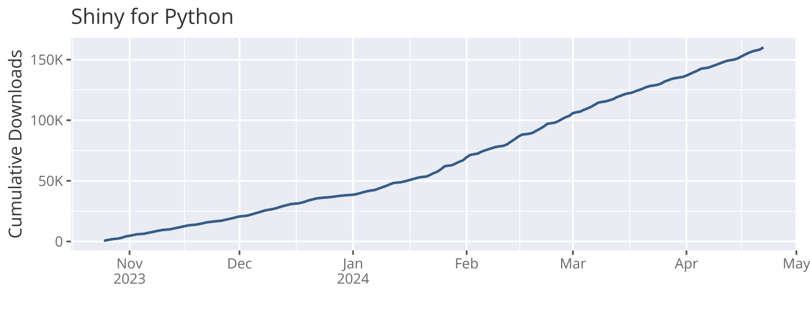

2024 Annual Report
Posit aims to create free and open-source software for data science, scientific research, and technical communication in a sustainable way, because it benefits everyone when the essential tools to produce and consume knowledge are available to all, regardless of economic means.
We believe corporations should fulfill a purposeful benefit to the public and be run for the benefit of all stakeholders including employees, customers, and the larger community.
As a Delaware Public Benefit Corporation (PBC) and a Certified B Corporation®, Posit’s open-source mission and commitment to a beneficial public purpose are codified in our charter, requiring our corporate decisions to balance the interests of the community, customers, employees, and shareholders.
B CorpsTM meet the highest verified standards of social and environmental performance, transparency, and accountability. Posit measures its public benefit by utilizing the non-profit B Lab®’s “Impact Assessment”, a rigorous assessment of a company’s impact on its workers, customers, community, and environment.
In 2019, Posit (then RStudio) met the B Corporation certification requirements set by the B Lab. In 2023, our certification was renewed, and we are proud to share that our B Lab Impact Assessment score rose from 86.1 to 92.5 with this renewal. The B Lab certification process uses credible, comprehensive, transparent, and independent standards to measure social and environmental performance. Details of these assessments can be found on our B Lab company page.
To fulfill its beneficial purposes, Posit intends to remain an independent company over the long term. With the support of our customers, employees, and the community, we remain excited to contribute useful solutions to the important problems of knowledge they face.
J.J. Allaire
CEO, Posit PBC
Posit’s mission is to create free and open-source software for data science, scientific research, and technical communication. We do this to enhance the production and consumption of knowledge by everyone, regardless of economic means, and to facilitate collaboration and reproducible research, both of which are critical to the integrity and efficacy of work in science, education, government, and industry.
In addition to our open source products, Posit produces a modular platform of commercial software products that enable teams to adopt R, Python, and other open-source data science software at scale. Posit also offers online services that make it easier to learn and use data science tools over the web.
Together, Posit’s open-source software and commercial software form a virtuous cycle. In most companies, a “customer” is someone who pays you. For us, the definition of a customer must include the open source community, with whom we exchange the currencies of attention, respect, and love. When we deliver value to our open source users, they will likely bring our software into their professional environments, which opens up the possibility of commercial partnerships. To keep this cycle flowing, our open source developers must know and care about the integrations with proprietary solutions that matter to our enterprise customers. It also means that Posit’s commercial teams consistently provide value to individuals who may never directly spend a dollar with us.
Posit’s approach is not typical. Traditionally, scientific and technical computing companies create exclusively proprietary software. While it can provide a robust foundation for investing in product development, proprietary software can also create excessive dependency that is not good for data science practitioners and the community. In contrast, Posit provides core productivity tools, packages, protocols, and file formats as open-source software so customers aren’t overly dependent on a single software vendor. Additionally, while our commercial products enhance the development and use of our open-source software, they are not fundamentally required for those without the need or the ability to pay for them.
As of May 2024, Posit is spending ~38% of its engineering resources on open-source software development, and is leading contributions to over 350 open-source projects. Posit-led projects targeted a broad range of areas including the RStudio IDE; infrastructure libraries for R and Python; numerous packages and tools to streamline data manipulation, exploration and visualization, modeling, and machine learning; and integration with external data sources. Posit also sponsors or contributes to many open-source and community projects led by others, including NumFOCUS, the R Consortium, the Python Software Foundation, DuckDB, Pandoc, pyodide, and ProseMirror, as well as dozens of smaller projects via the Open Source Collective or directly on Github. Additional information about our products and company contributions for the past two years can be found in our “Year In Review” blog posts.
Today, millions of people download and use Posit open-source products in their daily lives. Additionally, more than 10,000 customers that purchase our professional products help us sustain and grow our mission. It is inspiring to help so many people participate in global economies that increasingly reward data literacy, and know that our tools help produce insights essential to navigating our complex world.
We want Posit to serve a meaningful public purpose, and we run the company for the benefit of our customers, employees, and the community at large. That’s why we’re organized as a Public Benefit Corporation (PBC).
What makes a PBC different from other types of corporations?
“A ‘public benefit corporation’ is a for-profit corporation organized under and subject to the requirements of this chapter that is intended to produce a public benefit or public benefits and to operate in a responsible and sustainable manner.” — Delaware Public Benefit Corporations Law
As a PBC and Certified B Corporation, we must meet the highest verified standards of social and environmental performance, transparency, and accountability. Our directors and officers have a fiduciary responsibility to address social, economic, and environmental needs while still overseeing our business goals.
Creation of free and open source software for data science, scientific research, and technical communication:
1) To enhance the production and consumption of knowledge by everyone, regardless of economic means.
2) To facilitate collaboration and reproducible research, both of which are critical for ensuring the integrity and efficacy of scientific work.
How we built our company charter
The board of directors shall manage or direct the business and affairs of the public benefit corporation in a manner that balances the pecuniary interests of the stockholders, the best interests of those materially affected by the corporation’s conduct, and the specific public benefit or public benefits identified in its certificate of incorporation.
A public benefit corporation shall no less than biennially provide its stockholders with a statement as to the corporation’s promotion of the public benefit or public benefits identified in the certificate of incorporation and of the best interests of those materially affected by the corporation’s conduct.
How we hold ourselves accountable to our charter
Demonstrate high social and environmental performance by achieving a B Lab Impact Assessment score of 80 or above and passing the risk review.
Make a legal commitment by changing our corporate governance structure to be accountable to all stakeholders, not just shareholders, and achieve benefit corporation status if available in our jurisdiction.
Exhibit transparency by allowing information about our performance measured against B Lab’s standards to be publicly available on our B Corp profile on B Lab’s website.
Before the company re-branded in 2022, Posit (then RStudio) was often thought of as an “R company” in the data community because of its dedication to developing and maintaining some of the most used R libraries in the world. However, Posit has always been better described as a scientific software company. Supporting Python (via the reticulate package, RStudio language support), working with relational databases and data platforms such as Apache Spark (a cross-platform data frame compatibility via feather/Apache Arrow), and much more mean that we’ve never been solely an “R company”.
Since the 2021 PBC report, Posit has released several new packages in the Python and R ecosystems and continues to maintain and grow the libraries previously developed. The following subsections highlight selected Posit software projects of interest to the broad data science community. Where metrics are published, please note these represent a lower bound on the actual number, as it is difficult-to-impossible to account for every install and usage in the world.
In July 2022, Posit announced the Quarto project, an open-source scientific and technical publishing system as a successor to the R Markdown library. While Quarto incorporates the lessons learned from over 10 years of developing R Markdown into an entirely new project, it’s likely still quite familiar to users of R Markdown as they share two core dependencies: Knitr and Pandoc. In fact, despite the fact that Quarto does some things differently, most existing R Markdown documents can be rendered unmodified using Quarto.
Quarto allows users to choose from multiple computational engines (Knitr, Jupyter, and Observable), which makes it easy to use Quarto with R, Python, Julia, JavaScript and many other languages. It also allows users to author documents as plain text markdown or Jupyter Notebooks, and publish to numerous outputs such as HTML, PDF, MS Word, ePub and more. Finally, the community has already extended Quarto , as shown by the quartodoc project for developing API documentation.
There are 5 full time equivalent (FTE) employees developing open-source Quarto products as of May 2024.
Shiny has been a mainstay in the R community since its launch in 2012, providing a web application framework that makes it easy to tell data stories in interactive point-and-click web applications. In April 2023, Posit released the Python version of Shiny, bringing the same great reactive programming model and modular design to the PyData ecosystem.
Shiny applications can be shared with others via an open-source Shiny Server, the hosted shinyapps.io service, or with Posit Connect. Shiny and related packages include shiny (Python, R), bslib, shinytest, shinyloadtest, shinydashboard, leaflet, and crosstalk.
There are 5 FTE Posit employees developing the open-source Shiny and Shiny Server products as of May 2024.

When presenting an analysis, a table can often convey the results more concisely than the most beautiful and interactive of charts. However, the experience of creating and displaying tables in R and Python has been mixed, especially when you want to display something beyond a plain data frame representation.
To that end, the gt and Great Tables packages have defined a “grammar of tables” to solve this problem (in R and Python, respectively), analogous to the “grammar of graphics” for specifying charts.
As of May 2024, there is 1 FTE Posit employee developing gt / Great Tables open-source packages.
Vetiver solves the issues around versioning, sharing, deploying and monitoring predictive models served via APIs. Available for both R and Python, vetiver is extensible via generics that support many common types of models. Vetiver also provides the “model cards” functionality, which can help to generate documentation by extracting some information about the generated model.
WIth the ubiquity of open source software in our daily lives, one area that most people don’t think about is ‘How do you distribute that software quickly and securely to the end user?’. To that end, Posit created Posit Package Manager, which gives companies a means for providing curated repositories, repository snapshots for better reproducibility, the ability to air-gap the repository for enhanced security and much more.
As part of our commitment to improving the quality and availability of open source software for all, Posit hosts a public instance of Posit Package Manager called Posit Public Package Manager that mirrors CRAN, PyPI and Bioconductor. This mirror served nearly 40 million downloads per month in Q1 2024.
WebR has the ambitious goal of bringing the R language to the browser, removing the need for a backend server for computation. It also allows for computation to be done on the client machine, supporting use cases that are infeasible or undesirable for using server-side processing (such as not wanting to send personal data over the internet). Also, by making the most of the user’s device capabilities, webR can improve performance and lower app hosting costs.
There is 1 FTE Posit employee developing webR open-source products as of May 2024.
Plotnine is an implementation of the grammar of graphics in Python, heavily influenced by ggplot2 in R. Built upon the ubiquitous matplotlib plotting library, custom (and otherwise complex) plots are easy to reason about and build incrementally, while the simple plots remain simple to create.
Siuba is a port of dplyr and other R libraries. It’s aim is to make data science faster through a consistent interface of verbs for working with real-world data: filter, arrange, select, mutate and summarize. Siuba supports several backends including pandas, DuckDB and SQL, providing a “write once, run many” freedom for your analytics code.
RStudio is a multi-language IDE designed for Data Science with R and Python. It augments the standard code console with an editor that can display Notebooks, launch apps, highlight code syntax, spot code errors, and directly execute code. Built into the IDE are tools for debugging, plotting, browsing files, and managing project histories and workspaces. Together these tools make data scientists and developers much more efficient.
There are 5 FTE Posit employees developing the RStudio IDE open-source desktop and server products as of May 2024.
The tidyverse is an opinionated collection of R packages designed for data science. All packages share an underlying design philosophy, grammar and data structures.
The tidyverse consists of nine core packages (including ggplot2, tidyr and readr) and 31 packages overall.
There are 9 FTE Posit employees developing Tidyverse and related open-source products as of May 2024.
Tidymodels is a cohesive collection of packages that perform tasks relevant to statistical modeling and machine learning. Tidymodels packages share a common syntax and design philosophy, and are designed to work seamlessly with Tidyverse packages.
There are currently 42 tidymodels packages on CRAN. Popular tidymodels packages include parsnip, rsample, recipes, tune and yardstick.
There are 3 FTE Posit employees developing Tidymodels and related open-source products as of May 2024.
Posit increases the efficiency of customers by making open-source packages that connect data scientists to spreadsheets, databases, distributed storage frameworks for big data, machine learning platforms, and the programming environments of other languages, like python.
Connectivity packages include: sparklyr, tensorflow for R, keras, odbc, and reticulate.
There are 3 FTE Posit employees creating connectivity-related open-source packages as of May 2024.
R-lib is a large collection of R packages that make it easier to build, find, and use effective tools for data analysis.
There are currently 114 R-lib packages. Popular packages include devtools, testthat, roxygen2, pkgdown and usethis.
The BLab Impact Assessment is composed of questions in five Impact Areas: Governance, Workers, Community, Environment, and Customers. Posit’s assessment results are available to the public here. We completed our first Impact Assessment in 2019 and earned an overall score of 86.1. We are proud to report that our latest score from our recertification process in 2023, is 92.5. To put this in context, the threshold for B Lab certification is a score of 80 or higher, and the median score for ordinary businesses who take the assessment is 50.9. Posit seeks to continually improve our internal governance, increase our workforce diversity and employee development efforts, expand our stewardship of the environment, deepen our engagement in our communities, and better serve our customers so that our public benefit will continue to improve each year.
In our initial assessment, we received high marks for incorporating as a benefit corporation, the health, wellness, safety, and financial security of our employees, and for educating and serving customers. We identified formal goal setting, career development, diversity, equity & inclusion, civic engagement & giving, and air & climate as areas for improvement.
The B Lab’s Impact assessment standards have evolved since 2019 (we are now on version 6 of the assessment). New questions were added, and thresholds for performance were raised in other cases. Of the scored questions we responded to in our most recent assessment, 38 were unchanged from 2019, 71 were modified from 2019 wording, and 22 were brand new questions. On the unchanged or modified questions, we have gained points in the areas listed below.
| Impact Area | Topic | % Achievement Gain since 2019 |
|---|---|---|
| Community | Civic Engagement & Giving | 39% |
| Diversity, Equity, & Inclusion | 60% | |
| Customers | Customer Stewardship | 28% |
| Environment | Air & Climate | 75% |
| Governance | Ethics & Transparency | 37% |
| Workers | Career Development | 62% |
| Engagement & Satisfaction | 50% | |
| Financial Security | 58% |
In addition to the open-source software we make freely available, and the open source data science package development produced by Posit engineers, Posit recognizes the importance of contributing financially to other valuable open-source and community initiatives. To date, Posit has given over $1.9M to projects led by others. Current commitments include contributing to NumFOCUS, the R Consortium, the R Foundation, DuckDB, the Eclipse Foundation, and the authors and maintainers of several other open-source projects.
Posit’s financial support also extends beyond the world of open source data science. Since 2020, Posit and its employees have given over $60k to over 135 nonprofits. Our donations reach a range of community-based causes, including organizations dedicated to racial equality, equal justice, LGBTQ+ support, and access to education. Alongside our donations to open source software development, this pool of charitable contributions contributes to the important work many are doing to increase the accessibility of data science for all. Our scoring in this area of the B Lab assessment has increased by 39.5% since 2019.
Since our initial B Lab assessment in 2019, Posit has continued to focus on increasing the strength of our team by utilizing talent practices that encourage diverse people to apply, join, and thrive at Posit. Specific changes made in recent years include the formation of a diversity, equity, inclusion, and accessibility council (DEIA Council), as well as the sponsoring of employee resource groups (ERG’s). We report our progress on our diversity metrics, as defined in the B Lab Assessment, in each quarter’s board meeting. We also pay close attention to issues of equity in compensation, hiring and interviewing, and employee experience. Our efforts to date have yielded increases in the percentages of women and those with minority racial or ethnic identities in both management and the employee population as a whole – and our recent assessment results reflect these gains.
We have made meaningful improvements in our care for customers in the past few years – particularly in our standards for managing customer data and privacy. Since 2019, we have formalized our approach to data privacy and compliance – we now conduct thorough internal and external audits and train all employees on the essentials of guarding customer data. These changes have increased our assessment performance by 28% since 2019.
We are happy to share that our assessment scores for Air and Climate impacts have improved by 75% since 2019. In November 2020, Posit achieved carbon neutrality by purchasing carbon offsets that counter the environmental impact of business travel (primarily for our annual conference and internal meetings). As a remote-first organization, we do not generate meaningful greenhouse gas emissions outside of air travel. By offsetting this impact through the funding of reforestation work in both South America and closer to home in Massachusetts, we hope to neutralize Posit’s potential damage to our planet.
A company’s positive governance impact is measured by the extent to which the company is accountable to stakeholders, and the extent to which its decision-making is transparent to all constituents. In 2019, RStudio scored 16.1 points out of a possible 21.9+ points in the Governance Impact Area, including 10 points awarded for the specific legal structures we have established as a Benefit Corporation that preserve our mission and consider our stakeholders regardless of company ownership.
In our latest assessment, our governance score improved by 37% via improvements in ethics and transparency areas, including anti-corruption and code of ethics training for employees, and more rigorous financial controls and financial transparency with employees. Looking ahead, we plan to incorporate more social and community benefit metrics in our corporate reporting, including board meeting updates, so that all of our stakeholders are aware of our ongoing progress and can help support our success.
We have made significant strides in our Worker assessment category since 2019, with scores increasing by 50% or more in areas such as career development, engagement and satisfaction, and financial security for our employees. Investments in employee career development include in-house management training programs, tooling and education to support constructive feedback, and documentation of job levels, pay ranges, and career paths within our major functions. In 2021, we initiated an annual organizational health survey, which allows us to collect and respond to employee feedback. We have also augmented our benefits to include a “lifestyle savings account” (LSA) funded by Posit that each individual can choose to apply to home office, professional development, wellness, or financial health expenses as they see fit. All together, we are working to continuously improve the value offered to our workers as our company grows.